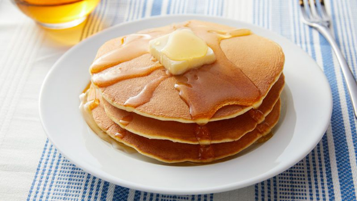

Pancakes

A morning no-brainer
This easy pancake recipe doesn't require much thought early in the morning and the pancakes taste great!
Ingredients
- 1 cup all-purpose flour
- 2 tablespoons white sugar
- 2 teaspoons baking powder
- 1 teaspoon salt, or to taste
- 1 cup milk
- 2 tablespoons vegetable oil
- 1 egg, beaten
Steps
- Combine flour, sugar, baking powder, and salt in a large bowl.
- Make a well in the center, and pour in milk, oil, and egg. Mix until smooth.
- Heat a lightly oiled griddle or frying pan over medium-high heat.
- Pour or scoop batter onto the griddle, using approximately 1/4 cup for each pancake.
- Cook until bubbles form and the edges are dry, 1 to 2 minutes.
- Flip and cook until browned on the other side. Repeat with remaining batter.
- Serve hot and enjoy!